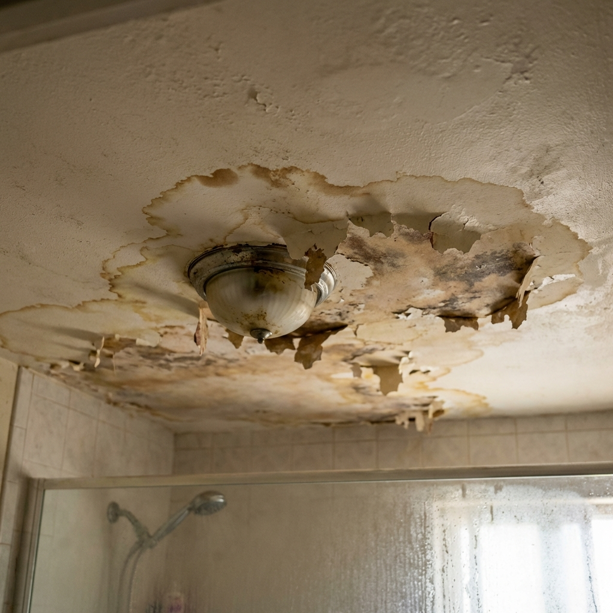

01
天花板漏水怎麼辦？
常見原因包含防水層老化、牆角裂縫或管線滲漏；先找對源頭，後續修繕才不會一直重來。
免費抓漏檢測不僅僅是更換磁磚。我們從防水底層做起， 改善通風與排水，為您打造一個乾爽、安全且美觀的衛浴空間。
浴室是家中使用頻率最高也最潮濕的地方。我們堅持「拆除見底」，重新施作三道彈性水泥防水層，並進行 48 小時試水，確保滴水不漏。
無論是經典的大理石紋磚、復古花磚還是極簡板岩磚，我們使用雷射水平儀輔助校正，確保磁磚縫隙平整、洩水坡度精準。
想翻新浴室嗎？
每一步都經過職人驗證，確保防水耐用又美觀
使用專業工具徹底打除舊磚水泥，清理防水層殘餘與發霉部位，確保新工程穩固基礎。
三道彈性水泥防水工法，搭配 48 小時蓄水試驗，確保滴水不漏。
使用雷射水平儀精準校正排水坡度，確保積水快速排出。
專業磁磚膠 + 雙重勾縫，縫隙平整美觀，耐髒易清潔。
衛浴設備安裝、止水門檻、拉門調整，功能與美觀兼顧。
大多數客戶最初都擔心「不知道要花多少錢」「施工會不會很亂」，但看完案例後就決定預約了。
從老舊漏水到現代舒適，這些真實案例證明我們的工藝
每個家的屋況不同，我們堅持「現場丈量後報價」，避免後續追加預算的爭議。以下提供常見的預算區間供您參考。
針對漏水處理與磁磚更新
*不含衛浴設備，實際價格依坪數而定
乾濕分離與整體質感升級
*可依需求挑選設備等級
我不玩文字遊戲，這裡直接給您最想知道的底牌。